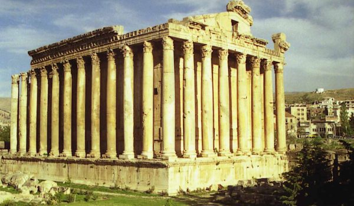
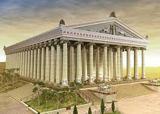
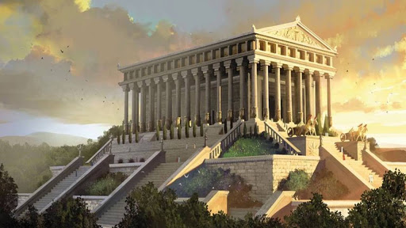
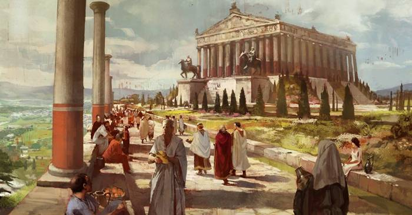

În Asia Mică, la Efes, patria filosofului Heraclit , se află templul Artemisei (Diana la români), zeița naturii, ocrotitoarea vânătorilor și păstorilor, iar mai târziu a oraselor și navelor avântate pe mare. Construirea unui sanctuar de proporții apreciabile în această regiune zgâlțâită frecvent de cutremure a pus unele probleme, rezolvate prin alegerea unui tern mlăștinos peste care s-au așezat straturi de carbune de lemn și saci cu pietre; se pare că această soluție s-a dovedit eficace: nu cutremurele au distrus impunătorul edificiu de-a lungul veacurilor, ci războaiele, jaful, intoleranța religioasă și furia unui nebun obsedat de celebritate.
   
Daca în cazul grădinilor babiloniene nu cunoaștem numele nici unuia dintre arhitecții și inginerii constructori, în cel al templului din Efes - al Artemisionului - numele (menționate de Herodot Vitruviu și alții) abundă: Pixodarus, ciobanul care a dscoperit din întâmplare depozitul de marmură albă; Chersiphron, Metagene și Pacanius care au imaginat sisteme ingenioase pentru transportul grelelor coloane monolite și arhitravelor masive ce înconjurau capitelurile; arhitecții Paeonios și Demetrios au terminat construcția, care (dupa cum ne spune Pliniu cel Bătrân), a durat 220 de ani; a început în preajma anului 650 î.e.n., templul a fost inaugurat în 430 î.e.n. Cresus, regele Lidiei și cuceritorul Efesului, a pus la dispoziție fonduri enorme trebuitoare construcției, și nu numai Cresus: șirul dublu de 127 de coloane de marmura albă înalt de 18 metri care înconjurau altarul cu statuia zeiței trebuiau să amintească (spune legenda) de cei 127 de principi care s-au ruinat pentru a ridica templul.